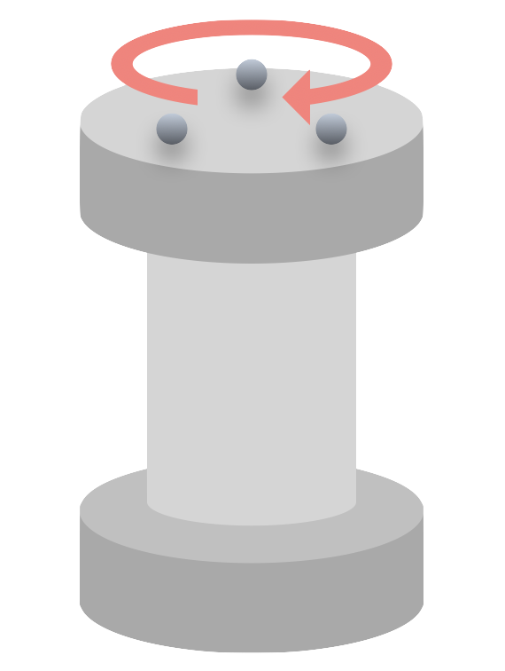

ホーム
Mocap Plus へようこそ
OptiTrackの解析ソフト「Motive」からエクスポートされたcsvファイルを添付するだけで、モーションキャプチャのデータを簡単に解析することができる統合ツールです。
お知らせ
2025/10/20
「広域解析ツール」を追加
広範囲の移動軌跡や滞在頻度を可視化するヒートマップ機能、指定範囲に対する網羅率を計算する機能を追加しました。
2025/08/07
機能とUIを改善
データ解析ツールでファイルを後からでも追加できるよう修正。スクロールしたときにメニューが固定されるようUIを改善。
2025/08/05
機能改善とアルゴリズム修正
ローパスフィルタに「ガウシアンフィルタ」を追加し、ユーザが選択できるようにしました。また、往復運動があるデータでも正確に動作区間を検出できるよう、アルゴリズムを修正しました。
2025/07/04
分散の表示とローパスフィルタの追加
データ解析ツールに分散表示機能と、ユーザが任意に設定できるローパスフィルタ機能を追加しました。
データ解析ツール
CSVファイルをアップロードして、剛体の運動を解析します。
1. データ入力
動作検出の高度な設定
データ全体の振れ幅(最大値-最小値)にこの倍率を掛けた値を、静止範囲のマージンとして使用します。
3. 解析結果
平均速度の計算設定
※平均速度及び平均スリップ率は、静止範囲として設定している倍率により大きく変動します。
4. グラフ
グラフ描画設定
フィルタを選択すると、強度を指定できます。
エクスポート設定
グラフのラベル編集
速度 vs 距離
スリップ率 vs 距離
鉛直変位 vs 距離
平面移動軌跡
広域解析ツール
CSVファイルをアップロードして、広範囲の移動軌跡や滞在傾向を可視化します。
1. 設定
基準速度算出ツール
モーションキャプチャのCSVデータから車輪の基準速度を計算します。
1. データ入力
ファイルが選択されていません
ファイルを解析中...
2. パラメータ設定
3. 計算結果
算出された基準速度 (v)
0.00000000 m/s
使い方ガイド
広域解析ツール
設定
① CSVファイルを追加: 解析したいMotiveのCSVファイルを1つ以上選択します。
② データ取得間隔: データをサンプリングする時間間隔を秒単位で指定します。短いほど軌跡は詳細になりますが、処理が重くなる場合があります。
③ ヒートマップのマス目サイズ: 滞在頻度を可視化するヒートマップの1マスの大きさをメートル単位で指定します。
④ 方向の定義: 座標系における鉛直方向の軸を定義します。
⑤ 解析対象の剛体を選択: ファイル内の剛体から解析したいものを選択し、必要に応じて凡例名を編集します。
解析開始
ボタンを押すと解析が実行され、結果が表示されます。
結果の確認
- 軌跡タブ: 選択した剛体の平面移動軌跡をプロットします。
- ヒートマップタブ: 各マスに剛体が滞在した時間の頻度を色で表示します。カーソルを合わせると、そのマスのカウント数が表示されます。
- 網羅率の計算: 指定した円または正方形の範囲に対し、軌跡がどれだけの面積をカバーしたかをパーセンテージで計算します。
- 各グラフはPNGまたはPDF形式でダウンロードできます。
データ解析ツール
データの収集
解析したい運動のトラッキングデータをキャプチャします。本ツールでは対象物の動作区間は、進行方向の変位データに基づいて自動で検出されます。具体的には、データ全体の振れ幅に対して非常に小さいマージン（デフォルト: 0.1%）を設定し、初期値からそのマージンを超えた瞬間を「動き出し」、データの末尾から逆算してマージン内に入った瞬間を「動き終わり」として判定します。これにより、理論上は一方向の単純な動作だけでなく、往復運動なども含めて動作全体を正確に捉えることができます。
データ入力
① CSVファイルを選択: 解析したいMotiveのCSVファイルを1つ以上選択します。
② 基準速度: 各ファイルに対応する車輪などの基準速度を入力します（スリップ率の計算に用います）。
③④ 方向の定義: 座標系における進行方向と鉛直方向を定義します。
【高度な設定】静止範囲の倍率:
対象物の動作区間は、進行方向の変位データに基づいて自動で検出されます。具体的には、データ全体の振れ幅に対して非常に小さいマージン（デフォルト: 0.1%）を設定し、初期値（または最終値）からそのマージンを超えた瞬間をそれぞれ「動き出し」「動き終わり」として判定しています。このため、一方向の単純な動作に対しては高精度に検出できますが、何度も往復するような複雑な動作では、意図しない区間が検出される可能性があります。
解析対象の剛体を選択
ファイル内に含まれる剛体の一覧が表示されるので、解析したいものをチェックします。凡例名はグラフのラベルとして使用されます。
解析開始
ボタンを押すと解析が実行されます。
結果確認と調整
- 平均速度、スリップ率、およびそれらの分散が表示されます。
- 微小速度のフィルタリング機能で、静止状態に近い微小な動きを平均速度の計算から除外できます。
- ローパスフィルタ機能で、グラフのノイズを低減できます。「移動平均」と「ガウシアン」から選択でき、フィルタ強度も調整可能です。
- グラフのラベルを編集したり、スタイル（カジュアル/フォーマル）を変更できます。
- 各グラフはPNGまたはPDF形式でダウンロードできます。
- 虫眼鏡アイコンからグラフを拡大表示できます。
基準速度算出ツール
データの収集
基準速度を算出したい回転系について、あらゆる負荷がかからない状態で固定して回転させたトラッキングデータをキャプチャします。例えば2輪ローバであれば、片方の車輪が鉛直方向を向くように立てかけて、上側の車輪にマーカをつけ、旋回動作をさせて上側車輪だけを回すことで無負荷の回転データを得ることができます。
データ入力
解析したいMotiveのCSVファイルを1つ選択します。
パラメータ設定
② 車輪の剛体を選択: ファイル内の剛体から、回転を計測したい車輪を選択します。
③ 車輪の半径 (cm): 選択した車輪の半径をセンチメートル単位で入力します。
④ 車輪の回転軸: 車輪がどの軸周りに回転しているかを選択します。
計算開始
ボタンを押すと、データから回転の周期を算出し、基準速度（周速度）を計算します。
結果確認
計算された基準速度が表示され、結果をクリップボードにコピーできます。
アルゴリズム仕様
本ツールで採用されているデータ解析のアルゴリズムおよび計算式について、その詳細を以下に示します。
データ解析ツール
動作区間の自動検出
本ツールでは、CSVデータに含まれる時間全体のデータから、対象物が実際に動作している区間を自動で抽出します。この処理は、ユーザーが指定した「進行方向」の座標データに基づいて行われます。 まず、進行方向軸における全データの最大値 $P_{max}$ と最小値 $P_{min}$ から、全体の振れ幅 $R$ を計算します。
次に、この振れ幅 $R$ とユーザーが設定可能な「静止範囲の倍率」$M$（デフォルト値: 0.001）を用いて、静止判定の閾値となるマージン $\delta$ を決定します。
このマージン $\delta$ を用いて、動作の開始点と終了点を検出します。
動作開始点: データの初期値 $P_{initial}$ から $\pm \delta$ の範囲を逸脱した最初のフレーム。
動作終了点: 往復運動などを正しく捉えるため、データの末尾から逆方向に探索します。最終値 $P_{final}$ から $\pm \delta$ の範囲に最後に入ったフレーム（＝範囲外だった最後のフレームの次）を終了点とすることで、動作全体の区間を正確に抽出します。
図1: 動作区間検出の概念図。変位データが静止範囲（マージン $\pm\delta$）を逸脱・復帰する点を検出する。
水平移動距離
各時刻 $t$ における水平移動距離 $d(t)$ は、ユーザーが定義した「鉛直方向」以外の2軸（水平軸 $h_1, h_2$）の変位から算出されます。動作開始点の座標を $(h_{1,0}, h_{2,0})$ とすると、時刻 $t$ での座標 $(h_{1,t}, h_{2,t})$ との間の距離は、三平方の定理を用いて次式で計算されます。
瞬時速度（微小速度）
時刻 $t_i$ における瞬時速度 $v_i$ は、隣接するフレーム間の水平移動距離と時間の変化量から、後退差分を用いて近似的に算出されます。
スリップ率
スリップ率 $S$ は、ユーザーが入力した基準速度 $u$ と、算出した剛体の速度 $v$ を用いて計算されます。$u > v$ の場合は駆動輪のスリップ（加速時）、$u < v$ の場合は制動輪のスリップ（減速時）として、以下の式で定義されます。
グラフにプロットされるのは各時刻の瞬時速度から算出されたスリップ率であり、「平均スリップ率」は平均速度を用いて算出されます。
分散
速度およびスリップ率のばらつきを示す指標として、標本分散 $\sigma^2$ と不偏分散 $u^2$ の2種類を算出しています。データ数 $n$、個々のデータ値 $x_i$、平均値 $\bar{x}$ を用いて、それぞれ以下の式で計算されます。
ローパスフィルタ
グラフのノイズを低減するために、複数のローパスフィルタから選択できます。
移動平均フィルタ
単純移動平均（Simple Moving Average）法です。指定された「サンプル数」$W$に基づき、ある点 $i$ の値 $y_i$ を、その前後 $\lfloor W/2 \rfloor$ 個のデータを含む合計 $W$ 個のデータの平均値 $\hat{y}_i$ で置き換えます。
ガウシアンフィルタ
より滑らかな結果が得られるガウス畳み込みによるフィルタです。フィルタの核となるガウス関数の標準偏差 $\sigma$ をユーザーが直接指定します。$\sigma$ の値が大きいほど、より強力な平滑化がかかります。
広域解析ツール
データサンプリング
複数のCSVファイルから長時間のデータを効率的に扱うため、指定された「データ取得間隔」に基づいてデータをサンプリングします。座標は正規化せず、元データの値をそのまま使用します。
ヒートマップ生成
対象物の滞在頻度や傾向を可視化するため、ヒートマップを生成します。まず、描画領域全体をユーザー指定の「マス目のサイズ」でグリッドに分割します。 次に、サンプリングされた各データ点について、それがどのグリッドセルに位置するかを判定します。同一のサンプリング時刻内に複数のデータ点（剛体）が同じセルに存在した場合でも、そのセルは1回のみカウントされます。これにより、各セルが少なくとも1回以上占有されたサンプリング時刻の総数を集計し、ヒートマップの各セルの値とします。
ここで、$T$はサンプリング時刻の集合、$P_t$は時刻$t$における全データ点の集合、$\mathbf{1}(\cdot)$は指示関数です。
網羅率の計算
指定された基準範囲（円または正方形）に対して、対象物がどれだけの割合の領域を走破したかを示す「網羅率」を計算します。 まず、基準範囲内に中心が含まれるヒートマップのグリッドセルの総数 $N_{total}$ を求めます。次に、これらのセルのうち、対象物が少なくとも1回以上滞在した（ヒートマップの値が1以上である）セルの数 $N_{reached}$ をカウントします。網羅率 $C$ は以下の式で算出されます。
基準速度算出ツール
角度データのアンラップ
Motiveから出力される回転角度データは、通常 $\pm 180^\circ$ の範囲に制限されており、回転がこの範囲を超えると値が不連続に変化（ラップ）します。正確な周期計算のため、このラップを解消（アンラップ）し、連続的な角度変化データに変換します。具体的には、隣接する角度データ $A_{i-1}$ と $A_i$ の差が $\pm 180^\circ$ を超えた場合に、$360^\circ$ のオフセットを加算または減算して補正します。
回転周期の算出
アンラップされた角度データから、車輪が1回転（$360^\circ$）するのに要する時間（周期 $T$）を算出します。まず、回転が開始したと見なされる点（初期角度から $5^\circ$ 以上変化した点）を検出し、その時刻 $t_{start}$ と角度 $A_{start}$ を記録します。次に、角度が $A_{start} \pm 360^\circ$ に到達する時刻 $t_{end}$ を探します。 目標角度を跨ぐ2つのフレーム間で線形補間を行い、正確な到達時刻 $t_{end}$ を推定します。目標角度 $A_{target}$ を跨ぐ直前と直後の点をそれぞれ $(t_{before}, A_{before})$, $(t_{after}, A_{after})$ とした場合、到達時刻 $t_{end}$ は以下の線形補間の式で求められます。
最終的な周期 $T$ は以下の式で得られます。
基準速度の算出
算出された周期 $T$ と、ユーザーが入力した車輪の半径 $r$ から、車輪の周速度、すなわち基準速度 $v$ を計算します。角速度 $\omega$ は $\omega = 2\pi / T$ で与えられるため、基準速度 $v$ は次式で求められます。
このツールについて
基本情報
更新履歴
- 2025-10-20: 広域解析ツールを追加し、軌跡・ヒートマップ・網羅率の可視化機能を追加。
- 2025-08-07: データ解析ツールでファイルを後からでも追加できるよう修正。スクロールしてもメニューが固定されるよう改善。
- 2025-08-05: ローパスフィルタにガウシアンフィルタを追加。動作区間検出アルゴリズムを修正。その他の潜在的なバグを修正。
- 2025-07-05: アルゴリズム仕様ページを追加し、数式表示の改善やレイアウト修正などの更新を実施。
- 2025-07-04: データ解析ツールに分散表示機能と、ユーザが任意に設定できるローパスフィルタ機能を追加。UI/UXの改善。
- 2025-07-03: データ解析ツールにグラフ拡大機能を追加。
- 2025-06-28: 基準速度の算出ツールを作成、データ解析ツールに統合。
- 2025-06-21: データ解析ツールの初期リリース。
注意事項・免責事項
- 本ツールは、OptiTrackの解析ソフト「Motive」からエクスポートされたCSVファイルに最適化されています。
- データ処理は全てブラウザ内で完結し、添付したデータが外部に送信されることはありません。
- 本ツールの利用によって生じた直接的または間接的な損害について、製作者は一切責任を負いません。
- 本ツールの作成にあたっては、複数のLLMを利用しています。
© 2025 SAITO Minoru.